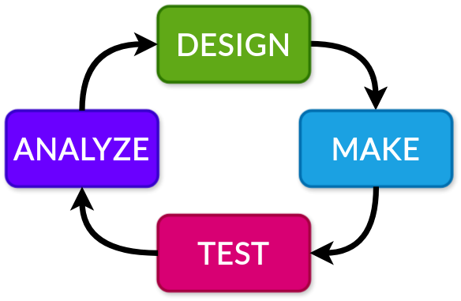

Campaigns#
A campaign runs a protocol repeatedly with supplied or optimizer-generated parameters.
max_concurrent_protocol_runs controls how many runs can execute at once.

Choose How to Supply Parameters#
Optimization: Set
optimize: trueand define anoptimizer.pybeside the protocol. EOS samples inputs, runs the protocol, and reports measured outputs to the optimizer.Fixed parameters: Use
global_parametersfor values shared by every run.Parameter schedule: Use
protocol_run_parametersfor values that vary by run. Without optimization, supply either global parameters or a complete schedule.
For example, the Color Mixing campaign optimizes mixing parameters to minimize
score_color.loss. The desired score_color.target_color is fixed in global_parameters.
See Optimizers for the optimizer contract and REST API for submission examples.
Campaign Settings#
Field |
Purpose |
|---|---|
|
Unique campaign name and loaded protocol type. |
|
Total number of runs, including completed runs when resuming. |
|
Maximum simultaneous runs. Defaults to 1. |
|
Ray worker for optimization. Defaults to |
|
Optimizer settings to override at submission or resume. |
|
Resume an existing campaign using the same name. |
Resuming#
EOS reconstructs the optimizer by reporting completed protocol results to it. Incomplete runs are removed before execution continues. Beacon also restores its journal, queued insights, and runtime settings. Explicit resume overrides take precedence over saved settings.
Keep the optimizer domain compatible with completed results. Domain overrides are not accepted on resume. See Beacon Optimizer for Beacon state and Customizing Beacon for custom optimizers.
Prepare a Protocol for Repeated Runs#
Make each run independent and leave the lab ready for the next run.
Declare every device a task interacts with. A robot transfer should request the robot, source device, and destination device.
Add only necessary dependencies. Use Scheduling holds when an allocation must survive between tasks.
Use
run_iffor conditional branches. Protocol graphs cannot contain loops. See Protocols for branching and fan-in.